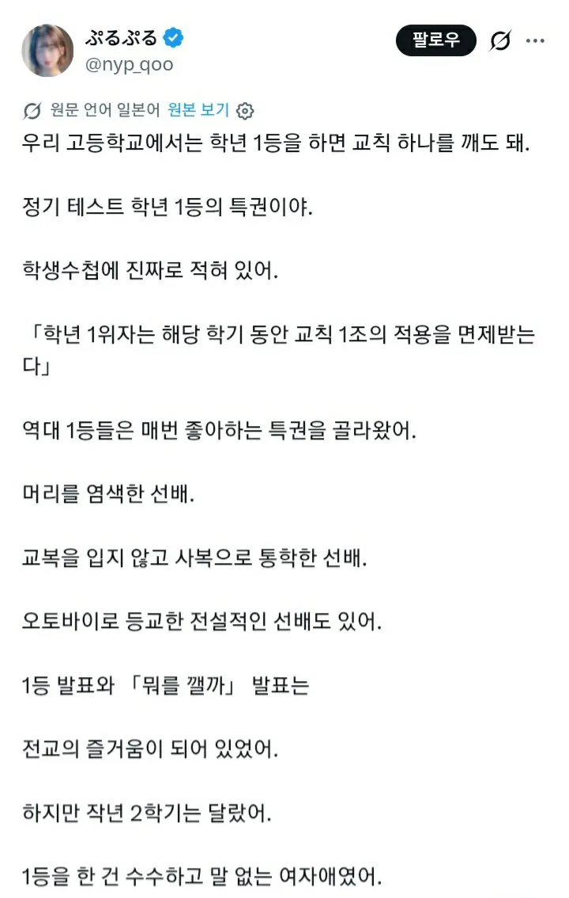
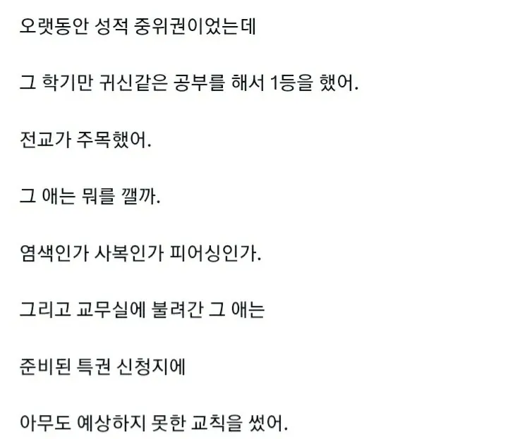
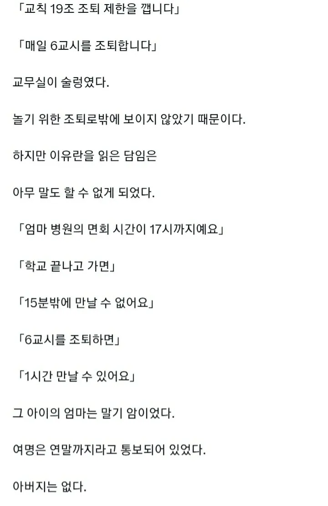
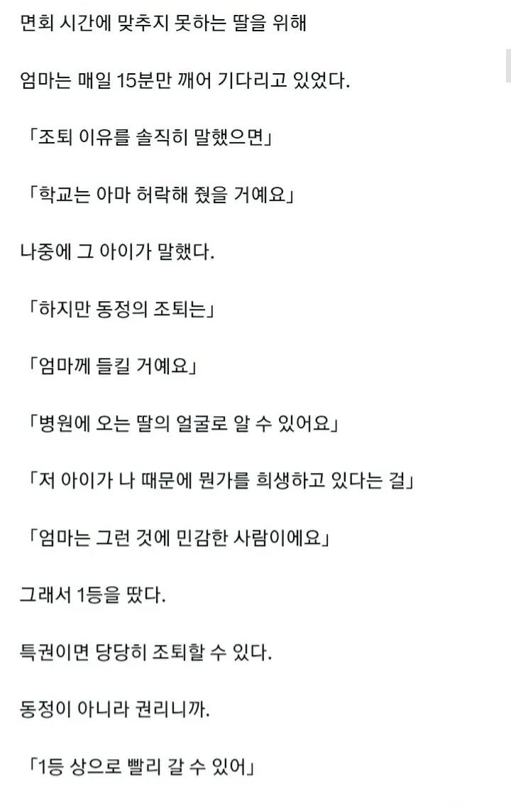
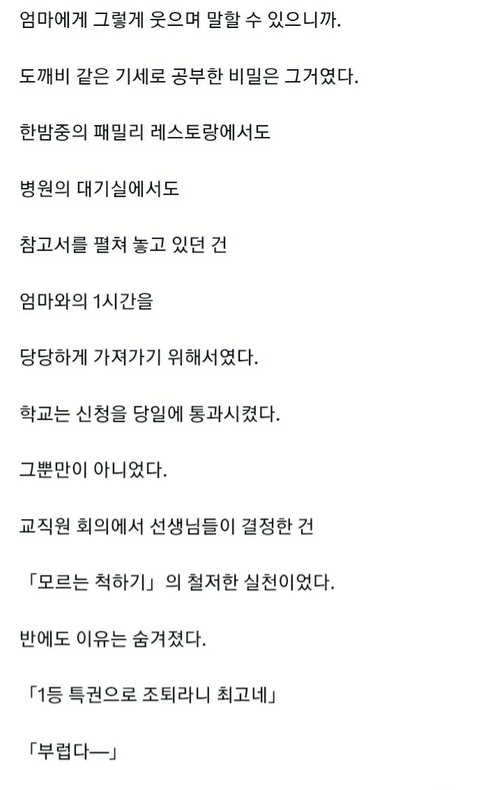
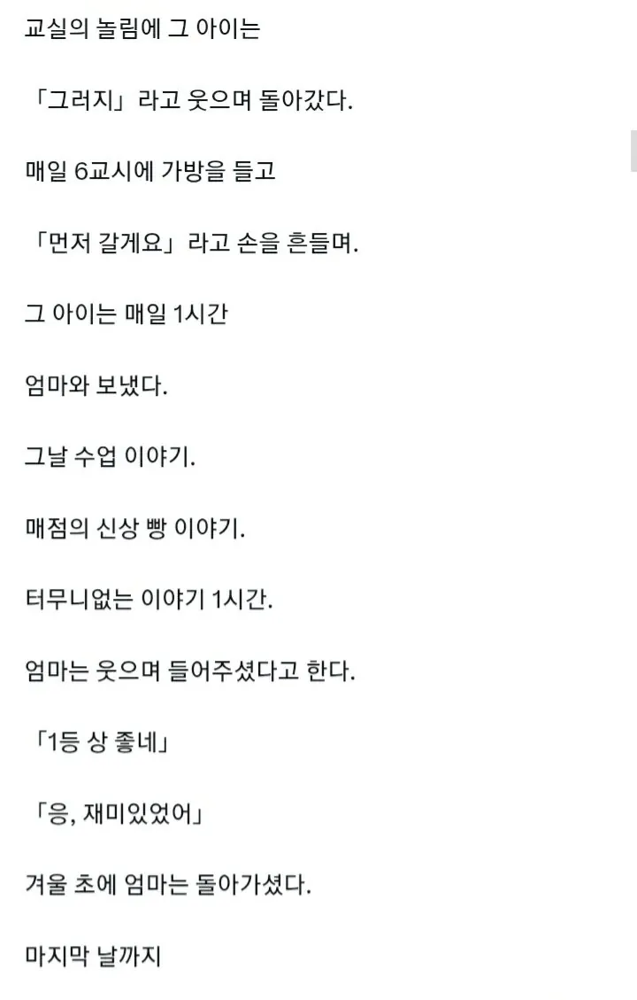
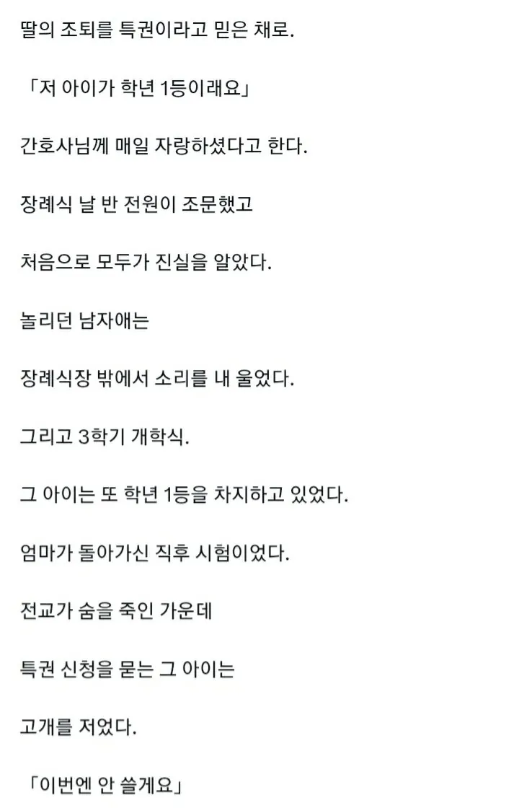
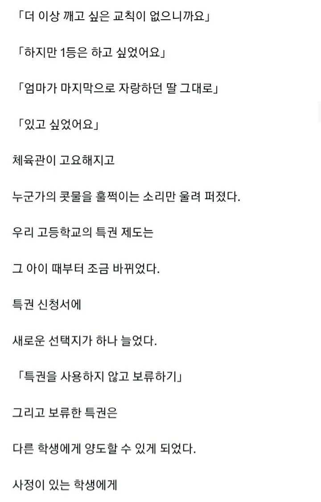
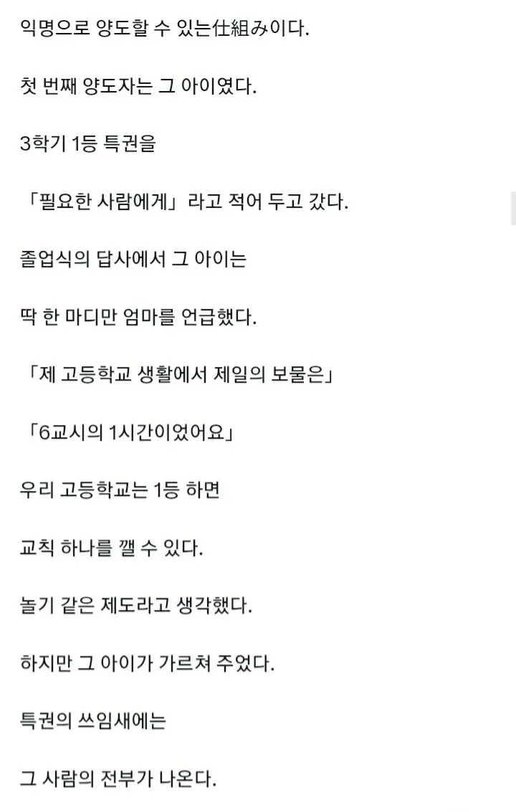
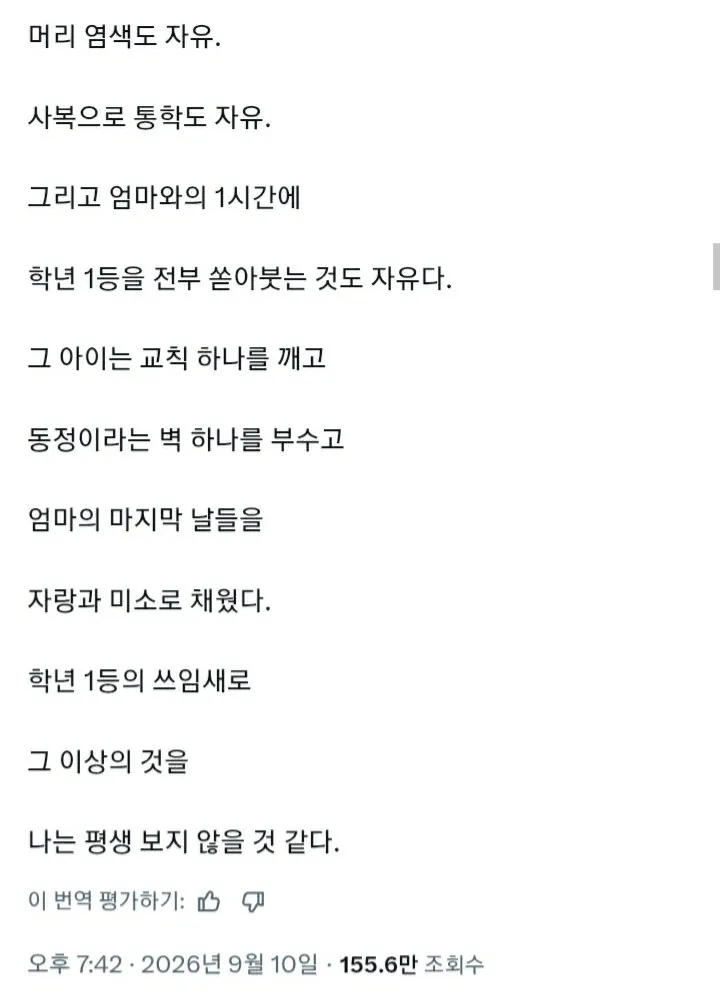

글이 쓰여진 시점이 모든일이 끝나고라면 전혀 문제 없는 내용인데...
그렇지. 다만 조금 현실적으로 보면 졸업하고 모든시점이 끝났을때 과연 누가 저 많은 사담과 비밀과 감정관계들을 정리해서 글쓴이에게 넘겼을까 하는 의문이 들지. 소설에선 저 시점을 전지적작가 시점이라고 함..
나이 먹어서 그런가 이런거 좋다
응애
긴글안읽는데 이건 쑥쑥읽히네
픽션이면 어때 허접한 번역체로도 날 울렸는데
나는감정없는사이코패스 종자들이 너무 많다
마! 나는 사이코패스다!
이게 자랑인줄 아는 등신들 개많음
중위권에서 공부로 전교1등하려면 학교가 꼴통이어야한다는건데 생각하면서 읽었는데 물론 픽션이겠지만 눈물은 나네.
소설 한 편 안 읽고 사나 AI 주작이라고 화내는 건 뭐 어쩌라는 건지
너무 작위적이지만 그래도 재미있었어
글이 너무 작위적이고 어쩌고 저쩌고 = 이성적이고 냉철한 나를 어필하고 싶은 찐따
슬프다
이거 나 아까 물어봤는데 저 계정 자체가" _라면 " 망상 계정 올리는 계정이래. 사실 아니니 착각 말도록.

또 여기서 주작이니 뭐니 시발 개지랄염병떠는 병신들 한가득이겠지?
그냥 소설로 읽어라 소설가지고 지랄안할거잖아
아 시발 눈물이 너무나네 ㅠㅠㅠㅠㅠㅠㅠㅠㅠㅠㅠㅠㅠ
글 쓰는건 좋은데 기초적인 짜임새는 맞추라고 ㅋㅋㅋ 글초입은 학생인데 중간 내용을 보면 선생만 알 내용을 읊고있고, 처음엔 교무실의 특권신청지 였다가 후반엔 체육관에서 모두 다 듣는데 고하고 있고.. 내용자체가 중구난방이라 글 수준 자체가 주작아니고선 납득이 안되는 지경임. 아예 몰입이 안되네.